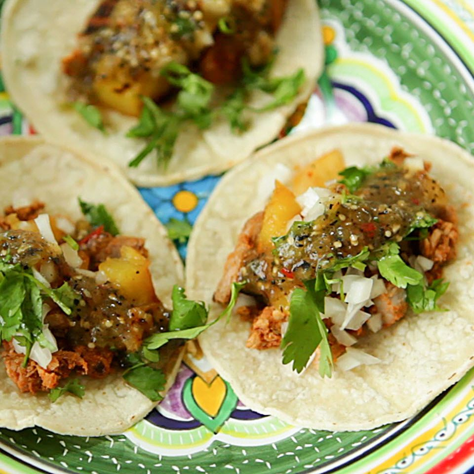

Pastor Tacos

Description
Pastor tacos are a delicious and savory taco that originated in Puebla, Mexico. They are made with pork,
pineapple, and onions.
Ingredients
- 1 lb pork
- 1 cup pineapple
- 1/2 cup onions
Instructions
- Cook the pork
- Add pineapple to the pork
- Add onions to the pork
- Place pork, pineapple, and onion mixture in tortillas
Enjoy!
Home